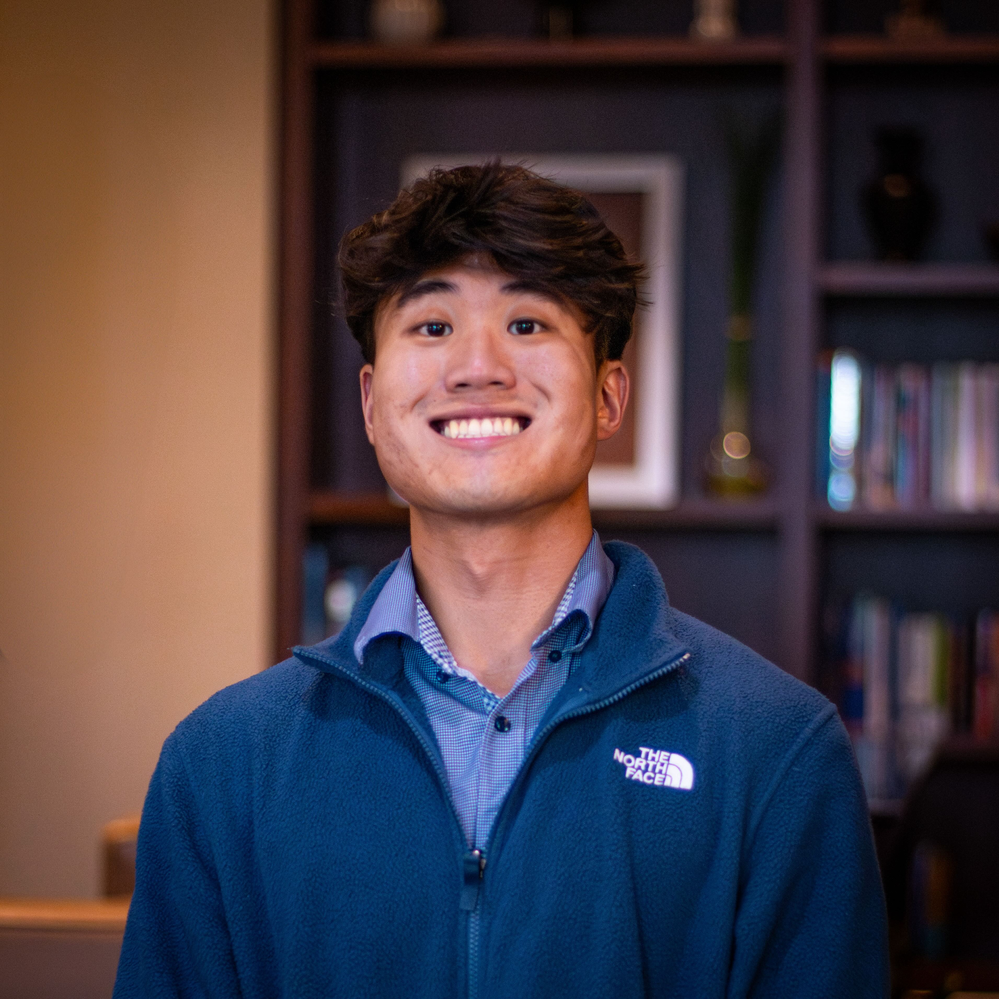

About Me

Hi! My name is Hans and I love nature, photography and sharing stories. In middle school, my father bought our first camcorder because he wanted to film a DVD sermon series he titled “Healing and Hope.” Little did he know, that camcorder would become a core part of my identity. As I slowly learned to record and edit videos, I began pursuing various projects at my church and school. However, it wasn’t until college that I became serious about creating compelling content and channeling my love of the outdoors through a creative outlet.
I credit a lot of my creative energy to my mother who was a big inspiration growing up. My mother loves art and attended school for oil painting. As a result, my childhood home was littered with paint brushes and canvases while acting as a mini gallery for her work. This is why I view myself as a product of my mother’s creativity through art and my father’s storytelling through ministry. If you like my work, definitely also check out my mother’s online gallery available here.